Arrows를 열고 원 크기 맞추기
Arrows는 원과 화살표로 무엇과 무엇이 어떻게 이어지는지 그리는 무료 웹 도구입니다. 지식 그래프를 그래프 데이터베이스에 넣기 전에, 무엇을 어떤 종류로 두고 어떤 관계로 이을지 손으로 먼저 설계해 볼 때 씁니다.
위의 ARROWS 열기를 누르거나, 검색창에 arrows.app을 치고 주소가 https://arrows.app인 결과를 누르세요.
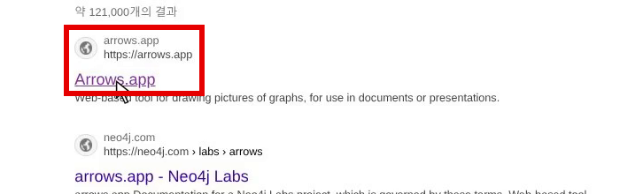
처음 뜨는 안내 창은 다 닫습니다. 아래 쿠키 안내에서 Use necessary cookies only(꼭 필요한 쿠키만)를 누르세요.
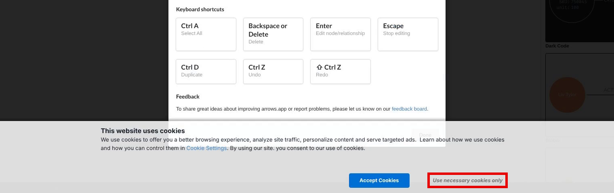
쿠키 안내가 닫히면 그 밑에 가려 있던 도움말 창의 Done(닫기)이 보입니다. Done을 누르세요. 왼쪽 넓은 곳이 그림을 그리는 그림판이고, 가운데에 처음부터 있는 원을 첫 원으로 씁니다.
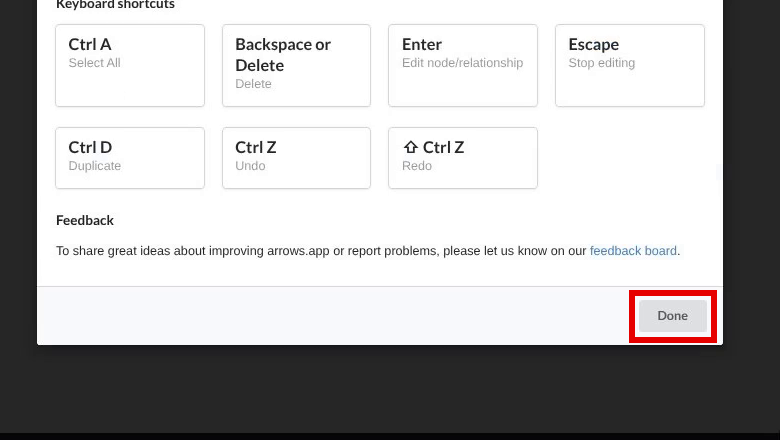
이름을 적기에는 원이 작아서 먼저 키웁니다. 오른쪽 칸의 Customize(모양 설정)를 누르고 radius(원 크기)를 50에서 60으로 바꾼 뒤 Tab을 누르세요. 앞으로 만드는 원도 이 크기로 나옵니다.
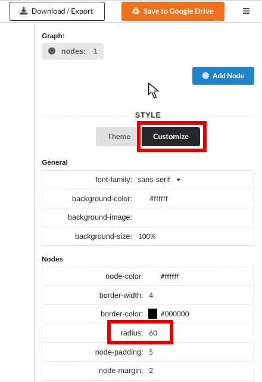
화살표에 적는 이름은 원래 비스듬히 기울어 나옵니다. 오른쪽 칸을 아래로 내려 detail-orientation을 horizontal(가로)로 바꾸고, 칸을 다시 맨 위로 올리세요.
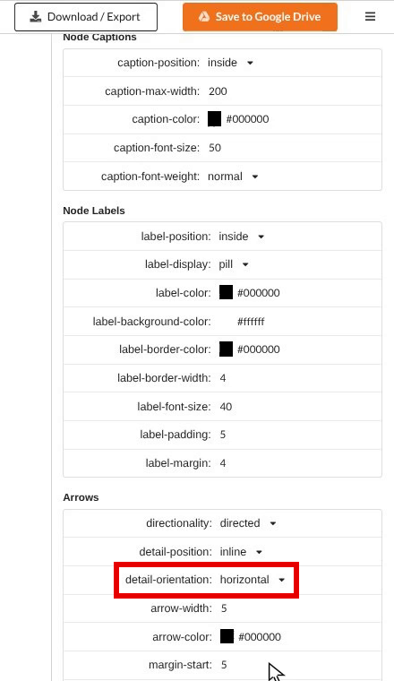
그릴 자리를 넉넉하게 쓰려고 첫 원의 안쪽을 잡아 왼쪽으로 끌어 놓으세요. 화면 끝에 바짝 대면 그림 전체가 작아지니 끝에서 조금 띄웁니다.
확인 radius가 60, detail-orientation이 horizontal이고, 빈 원이 그림판 왼쪽에 있습니다.
radius 같은 모양 칸(9단계의 node-color도)은 Enter 말고 Tab으로 마칩니다. Enter를 치면 원이 하나 더 생깁니다.
설비 · 쿨러 · 센서 놓고 잇기
유온이 오른다는 말을 들으면 현장에서는 어느 설비 얘기인지부터 묻습니다. 경보도 정비 기록도 설비 번호로 남아서, 설비부터 놓고 나머지를 여기에 잇습니다.
옮겨 둔 원을 누르고 오른쪽 맨 위 Caption(원 안에 보일 이름)에 이름을 적은 뒤, + Label을 눌러 나온 칸에 종류를 적고 Tab으로 마치세요. 이름만으로는 컴퓨터가 설비인지 부품인지 모르니 원마다 종류를 붙입니다. 표의 적을 글은 옆의 복사를 눌러 붙여 넣으세요. 손으로 치면 한 글자만 달라도 컴퓨터는 다른 이름으로 봅니다.
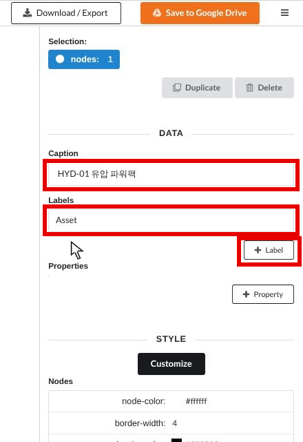
새 원은 이미 있는 원에서 끌어냅니다. 원을 누르면 둘레에 하늘색 띠가 생기는데, 원 안쪽을 잡으면 원이 옮겨지고 이 띠를 잡아 빈 곳에 놓아야 새 원과 화살표가 함께 나옵니다. 화살표는 늘 끌기 시작한 원에서 새 원 쪽으로 나갑니다. 아래 표의 「끌어낼 원」이 띠를 잡을 원입니다.
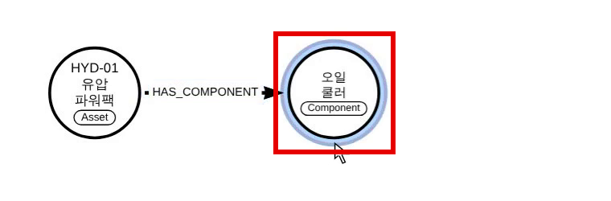
| Caption · 이름 | Label · 종류 | 끌어낼 원 | 왜 놓나 |
|---|---|---|---|
HYD-01 유압 파워팩 | Asset | (처음부터 있는 원) | 설비입니다. HYD-01은 설비 번호이고, 유압 파워팩은 기름의 압력으로 기계를 움직이는 설비입니다. Asset(자산)은 공장에서 설비를 부르는 말입니다. |
오일 쿨러 | Component | HYD-01 유압 파워팩 | 기름을 식히는 부품입니다. 고장은 대개 부품 하나에서 시작되고, 기름 온도가 오르면 먼저 볼 부품이 쿨러라서 따로 놓습니다. |
유온 센서 TS1 | Sensor | 오일 쿨러 | 쿨러가 잘 식히는지는 쿨러로 들어가는 유온을 재 봐야 압니다. 센서는 번호가 따로 있고 따로 고장 나거나 바뀌는 다른 물건이라 따로 놓습니다. TS1은 센서 번호입니다. |
화살표는 이름이 있어야 둘이 무슨 사이인지 압니다. 화살표마다 이 차례로 긋습니다.
- 둘 사이를 말로 해 봅니다(표의 「말로 하면」). 거꾸로 그으면 「쿨러가 파워팩을 부품으로 가진다」 같은 틀린 말이 됩니다.
- 화살표가 그 말의 주어 원에서 나가 있는지 봅니다. 나가는 쪽이 주어, 닿는 쪽이 상대입니다.
- 화살표를 누르고 Type(화살표 이름)에 이름을 적습니다. 영어 대문자로 쓰고 낱말 사이는 밑줄로 잇습니다.
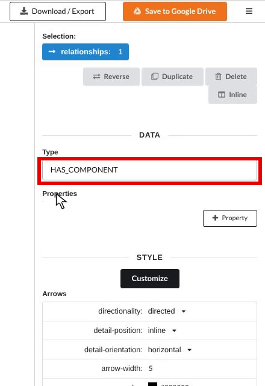
| 쉬운 뜻 | 말로 하면 | Type · 화살표 이름 | 방향 |
|---|---|---|---|
| 파워팩 안에 쿨러가 부품으로 들어 있다 | 유압 파워팩은 오일 쿨러를 부품으로 가진다 | HAS_COMPONENT | 맞음(파워팩에서 끌어냄) |
| 센서가 쿨러를 지켜본다 | 오일 쿨러는 유온 센서로 감시된다 | MONITORED_BY | 맞음(쿨러에서 끌어냄) |
이번에 추가 설비 · 오일 쿨러 · 유온 센서
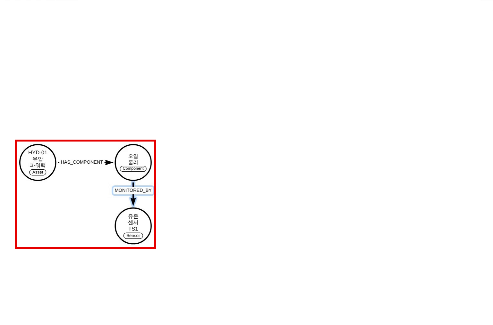
확인 원 3개 · 화살표 2개. 설비에서 화살표 두 개를 따라가면 쿨러를 어느 센서로 보는지까지 나옵니다.
원 하나가 이론에서 말한 노드이고, 이름과 방향이 있는 화살표가 관계입니다.
증상과 고장 유형 · 방향 뒤집기
어느 날부터 유온이 자꾸 오른다고 해 봅니다. 이 일을 그림에 담으려고, 눈에 보인 신호인 온도 상승과 그 뒤의 진짜 문제인 쿨러가 식히는 힘을 잃은 일을 원으로 놓습니다.
끌어낸 화살표가 주어가 아닌 원에서 나가 있으면(표의 방향 칸이 Reverse인 화살표), 화살표를 누르고 오른쪽 칸 위쪽의 Reverse(뒤집기)를 누른 뒤 Type을 적습니다. 이미 있는 원과 이을 때는 띠를 그 원 위에 놓습니다. 원은 생기지 않고 화살표만 생깁니다.
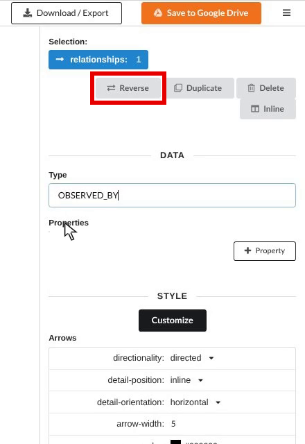
| Caption · 이름 | Label · 종류 | 끌어낼 원 | 왜 놓나 |
|---|---|---|---|
유온 상승 | Symptom | 유온 센서 TS1 | 눈에 보인 이상, 증상입니다. 센서는 늘 있는 물건이고 온도가 오른 것은 어느 날 생긴 일이라 한 원에 적지 않습니다. |
쿨러 냉각 성능 상실 | FailureMode | 유온 상승 | 무엇이 어떤 기능을 잃었는지, 고장 유형입니다(식히는 힘을 잃음). 유온은 다른 고장으로도 오르고 고장 하나가 여러 증상으로 드러나기도 해서 증상과 따로 놓습니다. |
| 쉬운 뜻 | 말로 하면 | Type · 화살표 이름 | 방향 |
|---|---|---|---|
| 유온이 오른 것은 센서 값에 잡혀서 안다 | 유온 상승은 유온 센서로 관측된다 | OBSERVED_BY | Reverse로 뒤집기(센서에서 끌어내 거꾸로 나옴) |
| 유온이 오르면 쿨러가 식히는 힘을 잃은 건 아닌지 의심한다 | 유온 상승은 쿨러 냉각 성능 상실을 가리킨다 | INDICATES | 맞음(유온 상승에서 끌어냄) |
| 식히는 힘을 잃은 것이 이 쿨러다 | 쿨러 냉각 성능 상실은 오일 쿨러에서 일어난다 | OCCURS_IN | 고장의 띠를 오일 쿨러 원 위에 놓기. 쿨러 원을 하나 더 만들면 쿨러 이야기가 두 군데로 갈라집니다 |
이번에 추가 유온 상승 · 쿨러 냉각 성능 상실과 화살표 셋
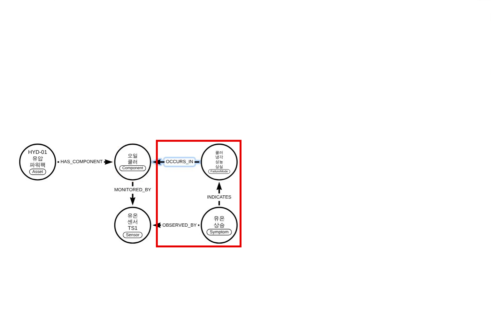
확인 원 5개 · 화살표 5개. 유온 센서로 관측된 유온 상승은 쿨러 냉각 성능 상실을 가리키고, 그 고장은 오일 쿨러에서 일어났습니다.
원인과 증거 달기
왜 못 식히는지는 아직 모릅니다. 쿨러 안의 핀(얇은 날개) 사이로 팬 바람이 지나가며 기름의 열을 가져가는데, 핀에 먼지가 끼면 바람길이 막혀 열이 빠지지 않습니다. 같은 고장이라도 원인마다 확인할 값도 고치는 방법도 달라서, 원인은 고장과 따로 놓습니다.
| Caption · 이름 | Label · 종류 | 끌어낼 원 | 왜 놓나 |
|---|---|---|---|
쿨러 핀 오염 | Cause | 쿨러 냉각 성능 상실 | 고장이 왜 났는지를 말해 주는 원인입니다. |
| 쉬운 뜻 | 말로 하면 | Type · 화살표 이름 | 방향 |
|---|---|---|---|
| 핀에 먼지가 껴서 쿨러가 못 식히게 됐다 | 쿨러 핀 오염은 쿨러 냉각 성능 상실을 일으킨다 | CAUSES | Reverse로 뒤집기(고장에서 끌어내 거꾸로 나옴) |
CAUSES는 늘 원인에서 고장 쪽으로만 긋습니다. 방향을 하나로 맞춰 두면 고장에서 CAUSES를 거꾸로 따라가기만 해도 원인이 다 나옵니다.
핀 오염이 맞는지는 값을 재서 기준에 견줘 봐야 압니다. 무슨 값을 어떤 기준에 견줄지 정해 둔 것이 이론에서 말한 증거이고, 따로 있는 물건이나 일이 아니라서 핀 오염 원에 꼬리표처럼 붙입니다.
핀 오염을 누르고 오른쪽 칸 Properties의 + Property를 누르면 칸 두 개가 나란히 생깁니다. 앞 칸에 무엇을 볼지, 뒤 칸에 기준을 적고 Tab으로 마칩니다. 둘째 줄은 + Property를 한 번 더 누릅니다.
| 앞 칸 · 무엇을 볼지 | 뒤 칸 · 기준 | 뜻 |
|---|---|---|
냉각 효율 | 30초 평균 < 70 % | 쿨러가 들어온 열을 얼마나 빼내는지 본 값입니다. 70 %가 안 되면 열을 제대로 못 빼고 있습니다. |
팬 진동 | 2분 평균 < 0.9 mm/s | 팬이 얼마나 떨리는지 잰 값입니다. 탈 난 팬은 심하게 떨리니, 떨림이 작으면 팬은 멀쩡합니다. |
열은 못 빼는데 팬은 멀쩡하면 핀이 막혔다고 볼 수 있어서, 증거 두 줄이 다 맞아야 핀 오염으로 봅니다.
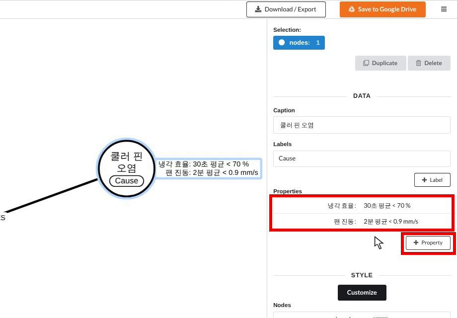
이번에 추가 쿨러 핀 오염 · 증거 두 줄 · CAUSES
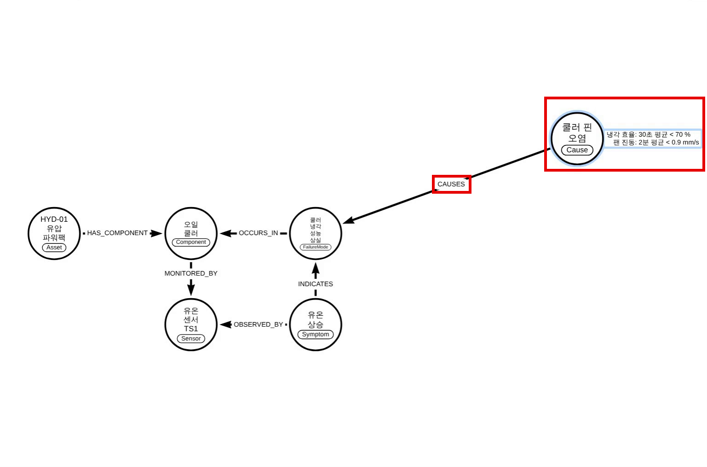
확인 원 6개 · 화살표 6개. CAUSES 화살표가 핀 오염에서 고장 쪽으로 나가고, 핀 오염 옆에 증거 두 줄이 붙어 있습니다.
원에 붙여 둔 이 줄이 이론에서 말한 속성입니다.
뒤 칸은 Enter 말고 Tab으로 마칩니다. Enter를 치면 빈 줄이 하나 더 생깁니다.
완화 조치 · 근본 조치와 근거 매뉴얼
원인을 찾았으면 손을 봐야 합니다. 손보는 것은 사람이 하는 일이라 고장 · 원인과 다른 종류로 따로 놓고, 우선 온도만 낮추는 완화 조치와 원인까지 없애는 근본 조치를 나눠 놓습니다. 조치는 설비에 손을 대는 일이라 근거가 있어야 하니, 이 설비에 쿨러와 팬을 다루는 매뉴얼 HM-8이 있다고 해 보고 그 절(번호가 붙은 토막)도 원으로 놓습니다.
그 매뉴얼의 발췌는 맨 위 매뉴얼 근거에서 볼 수 있습니다. 4단계에서 적은 기준(HM-8.4)도, 아래 절 번호와 8단계에서 적을 절차 번호도 그 발췌에 적힌 대로 적습니다. 이론에서 조치라고 한 종류는 Skill, 근거 문서는 ManualSection이라는 이름으로 적기로 정해 둡니다.
| Caption · 이름 | Label · 종류 | 끌어낼 원 | 왜 놓나 |
|---|---|---|---|
팬 최대 운전 | Skill | 쿨러 냉각 성능 상실 | 완화 조치입니다. 팬을 가장 세게 돌려 바람을 키워 우선 온도만 낮춥니다. |
쿨러 핀 세척 | Skill | 쿨러 냉각 성능 상실 | 근본 조치입니다. 팬을 아무리 세게 돌려도 핀에 낀 먼지는 남으니, 핀을 닦아 원인까지 없앱니다. |
HM-8.5 즉시 완화 조치 | ManualSection | 팬 최대 운전 | 팬을 세게 돌리는 방법이 적힌 HM-8 매뉴얼의 8.5절입니다. 절 하나를 여러 조치가 함께 근거로 쓸 수 있어서 절도 원으로 놓습니다. |
HM-8.7 근본 조치 | ManualSection | 쿨러 핀 세척 | 핀을 닦는 법이 적힌 8.7절입니다. |
| 쉬운 뜻 | 말로 하면 | Type · 화살표 이름 | 방향 |
|---|---|---|---|
| 팬을 세게 돌리면 못 식히는 것을 우선 덜어 준다(누그러진다) | 쿨러 냉각 성능 상실은 팬 최대 운전으로 완화된다 | MITIGATED_BY | 맞음(고장에서 끌어냄) |
| 핀을 닦으면 못 식히던 문제가 아예 풀린다(아예 고쳐진다) | 쿨러 냉각 성능 상실은 쿨러 핀 세척으로 근본 해결된다 | REMEDIED_BY | 맞음(고장에서 끌어냄) |
| 핀 세척은 핀 오염일 때만 소용이 있다. 고장하고만 이으면 어느 원인에 맞는 조치인지 모른다 | 쿨러 핀 세척은 쿨러 핀 오염을 없앤다 | ADDRESSES | 핀 세척의 띠를 핀 오염 원 위에 놓기 |
| 팬 최대 운전은 이 절을 보고 따라 한다 | 팬 최대 운전은 8.5절을 참조한다 | REFERS_TO | 맞음(팬 최대 운전에서 끌어냄) |
| 핀 세척도 이 절을 보고 한다 | 쿨러 핀 세척은 8.7절을 참조한다 | REFERS_TO | 맞음(핀 세척에서 끌어냄) |
MITIGATED_BY와 REMEDIED_BY를 다르게 적어 둬야 온도만 낮춘 조치인지 원인까지 없앤 조치인지 갈라 볼 수 있습니다. 같으면 온도가 내려간 것만 보고 다 끝났다고 닫아 버리기 쉽습니다.
이번에 추가 팬 최대 운전 · 쿨러 핀 세척 · 매뉴얼 절 둘
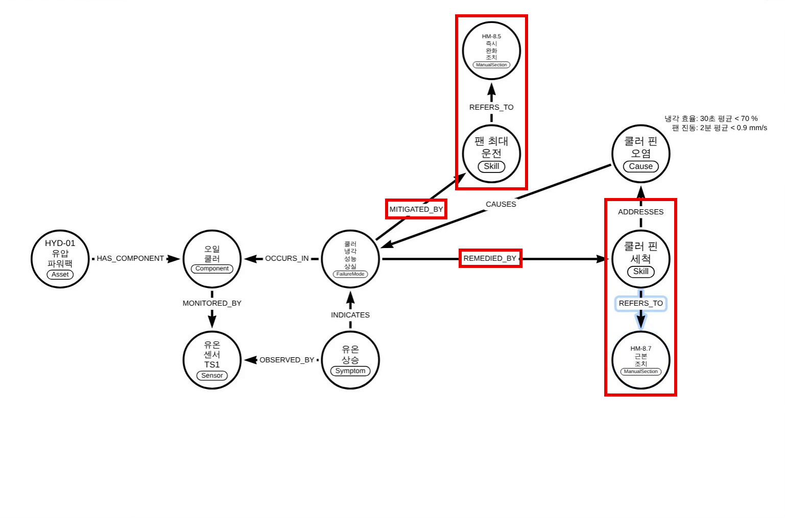
확인 원 10개 · 화살표 11개. 핀 오염이라고 나오면 화살표만 따라가도 조치는 핀 세척, 근거는 8.7절까지 나옵니다.
두 번째 원인 · 팬 구동 불량
온도가 오르는 원인이 핀 오염 하나만은 아닙니다. 고장은 같고 원인만 다르니, 원인 하나와 그 원인에 맞는 조치 · 근거를 더 놓습니다.
놓고 잇는 법은 앞 단계와 같습니다. 증거는 팬 구동 불량을 누르고 + Property로 붙입니다.
| Caption · 이름 | Label · 종류 | 끌어낼 원 | 왜 놓나 |
|---|---|---|---|
팬 구동 불량 | Cause | 쿨러 냉각 성능 상실 | 팬을 돌리는 벨트가 미끄러져 팬이 제대로 못 도는 원인입니다. 바람이 줄어 똑같이 열이 빠지지 않습니다. |
팬 점검 | Skill | 쿨러 냉각 성능 상실 | 벨트가 늘어지지 않았는지 살펴 손보는 근본 조치입니다. 팬이 문제인데 핀을 닦아 봐야 소용없어서 따로 놓습니다. |
HM-8.1 팬 벨트 점검 | ManualSection | 팬 점검 | 벨트 살피는 법이 적힌 8.1절입니다. |
| 쉬운 뜻 | 말로 하면 | Type · 화살표 이름 | 방향 |
|---|---|---|---|
| 이것도 고장을 일으키는 쪽이다 | 팬 구동 불량은 쿨러 냉각 성능 상실을 일으킨다 | CAUSES | Reverse로 뒤집기(고장에서 끌어내 거꾸로 나옴) |
| 원인을 없애는 근본 조치다 | 쿨러 냉각 성능 상실은 팬 점검으로 근본 해결된다 | REMEDIED_BY | 맞음(고장에서 끌어냄) |
| 팬 구동 불량에 맞는 조치다 | 팬 점검은 팬 구동 불량을 없앤다 | ADDRESSES | 팬 점검의 띠를 팬 구동 불량 원 위에 놓기 |
| 벨트 살피는 법이 이 절에 있다 | 팬 점검은 8.1절을 참조한다 | REFERS_TO | 맞음(팬 점검에서 끌어냄) |
| 증거를 붙일 원 | 앞 칸 · 무엇을 볼지 | 뒤 칸 · 기준 |
|---|---|---|
| 팬 구동 불량 | 팬 진동 | 2분 평균 ≥ 0.9 mm/s |
핀 오염의 팬 진동은 0.9 미만이고 여기는 0.9 이상입니다. 같은 값 하나를 놓고 떨림이 작으면 핀 쪽, 크면 팬 쪽으로 원인이 갈립니다.
이번에 추가 팬 구동 불량 · 팬 점검 · HM-8.1
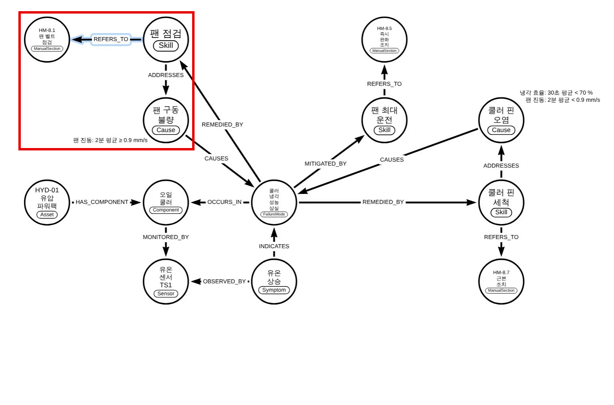
확인 원 13개 · 화살표 15개. 팬 구동 불량에서 팬 점검, 8.1절까지 화살표로 이어집니다.
세 번째 원인 · 주변 온도 상승
원인이 하나 더 있습니다. 쿨러는 열을 둘레의 공기로 내보내는데, 설비를 넣어 둔 함, 캐비닛 안 공기가 이미 뜨거우면 쿨러도 팬도 멀쩡한데 열이 빠지지 않습니다.
새 원은 이어질 원이면 어디서 끌어내도 되어서, 이번 조치는 원인에서 끌어냅니다. 8.7절 원은 이미 있으니 환기 보강의 띠를 그 위에 놓기만 합니다.
| Caption · 이름 | Label · 종류 | 끌어낼 원 | 왜 놓나 |
|---|---|---|---|
주변 온도 상승 | Cause | 쿨러 냉각 성능 상실 | 캐비닛 안이 더워 열이 빠지지 않는 원인입니다. 이것도 온도가 오른 일이지만, 유온 상승처럼 눈에 보인 이상이 아니라 쿨러가 왜 못 식히는지를 말해 주는 까닭이라 원인으로 놓습니다. |
캐비닛 환기 보강 | Skill | 주변 온도 상승 | 필터를 청소하고 캐비닛의 환풍기를 살펴 캐비닛에 바람이 잘 통하게 하는 근본 조치입니다. |
| 쉬운 뜻 | 말로 하면 | Type · 화살표 이름 | 방향 |
|---|---|---|---|
| 이것도 고장을 일으키는 쪽이다 | 주변 온도 상승은 쿨러 냉각 성능 상실을 일으킨다 | CAUSES | Reverse로 뒤집기(고장에서 끌어내 거꾸로 나옴) |
| 환기를 보강하면 캐비닛 안이 더운 게 없어진다 | 캐비닛 환기 보강은 주변 온도 상승을 없앤다 | ADDRESSES | Reverse로 뒤집기(주변 온도 상승에서 끌어내 거꾸로 나옴) |
| 환기 보강도 원인을 없애는 근본 조치다 | 쿨러 냉각 성능 상실은 캐비닛 환기 보강으로 근본 해결된다 | REMEDIED_BY | 고장의 띠를 환기 보강 원 위에 놓기 |
| 환기 보강하는 법도 핀 세척과 같은 8.7절에 있다 | 캐비닛 환기 보강은 8.7절을 참조한다 | REFERS_TO | 환기 보강의 띠를 8.7절 원 위에 놓기 |
| 증거를 붙일 원 | 앞 칸 · 무엇을 볼지 | 뒤 칸 · 기준 |
|---|---|---|
| 주변 온도 상승 | 캐비닛 온도 | 2분 평균 ≥ 35 ℃ |
캐비닛 안이 정말 더운지는 온도를 재 보면 됩니다.
이번에 추가 주변 온도 상승 · 캐비닛 환기 보강 · 8.7절로 가는 화살표
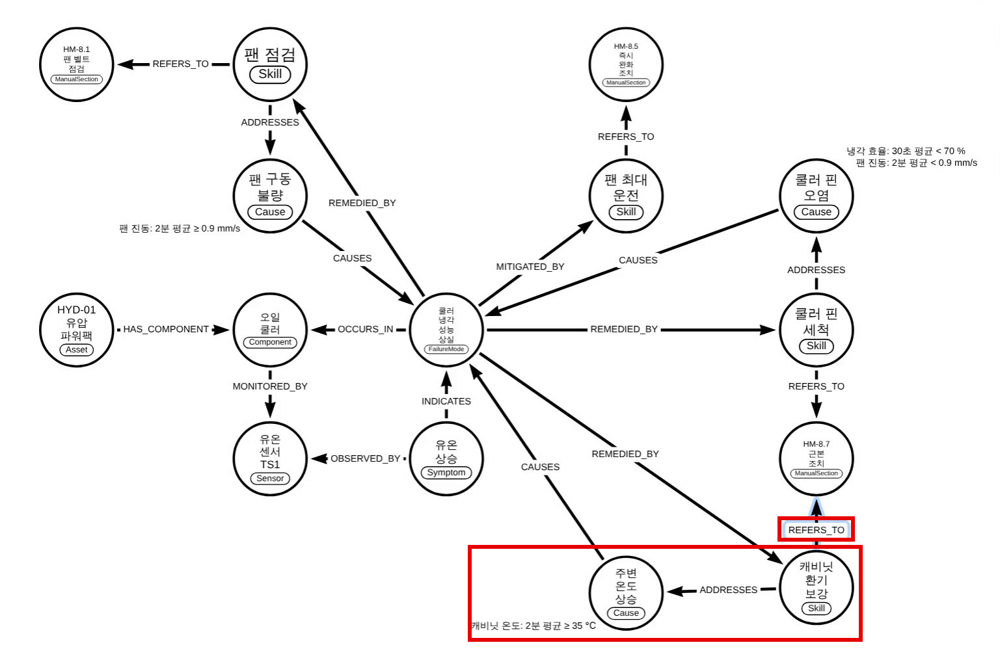
확인 원 15개 · 화살표 19개. 원인마다 맞는 조치가 하나씩 붙었습니다. 팬 구동 불량에는 팬 점검, 핀 오염에는 핀 세척, 주변 온도 상승에는 환기 보강입니다.
고장이 고장으로 번지는 길과 절차 번호
고장이 다른 고장으로 번지기도 합니다. 팬의 축을 받쳐 주는 베어링이 닳으면(베어링 열화) 팬이 흔들리고, 그러다 쿨러까지 못 식히게 됩니다.
| Caption · 이름 | Label · 종류 | 끌어낼 원 | 왜 놓나 |
|---|---|---|---|
팬 베어링 열화 | FailureMode | 쿨러 냉각 성능 상실 | 베어링이 축을 받쳐 주는 기능을 잃어 가는 고장 유형입니다. 진동이 커지는 자기 증상이 있어, 그 증상에서 출발해 찾아올 수도 있어야 합니다. |
진동 증가 | Symptom | 팬 베어링 열화 | 진동이 실제로 커졌다는 일, 유온 상승처럼 눈에 보인 증상이라 원으로 놓습니다. 원인에 붙인 팬 진동은 0.9를 넘는지 견주는 증거라서 원이 아닙니다. |
| 쉬운 뜻 | 말로 하면 | Type · 화살표 이름 | 방향 |
|---|---|---|---|
| 베어링이 닳으면 결국 쿨러까지 못 식히게 된다 | 팬 베어링 열화는 쿨러 냉각 성능 상실로 이어진다 | LEADS_TO | Reverse로 뒤집기(냉각 성능 상실에서 끌어내 거꾸로 나옴) |
| 진동이 커지면 베어링이 닳은 건 아닌지 의심해 볼 수 있다 | 진동 증가는 팬 베어링 열화를 가리킨다 | INDICATES | Reverse로 뒤집기(베어링 열화에서 끌어내 거꾸로 나옴) |
양쪽이 다 고장이라 CAUSES를 쓰지 않습니다. CAUSES는 원인에서 고장으로만 긋기로 해서, 여기에 쓰면 원인을 찾을 때 고장이 섞여 나옵니다.
매뉴얼 한 절에는 작업 순서가 여러 개 있습니다. 이 작업 순서를 절차라고 하고, 현장에서는 표준 작업 절차를 줄여 SOP라고 부릅니다. 절차마다 SOP-로 시작하는 번호가 있습니다. 같은 8.7절을 보는 두 조치도 따르는 절차가 달라서, 번호를 절 원에 적으면 어느 조치의 번호인지 알 수 없습니다. 조치 원에 적어도 되지만, 여기서는 조치가 그 절에서 따르는 절차가 한 줄로 읽히게 조치에서 절로 가는 화살표에 적습니다.
화살표에도 속성을 달 수 있습니다. 화살표를 누르고 + Property의 앞 칸에 절차, 뒤 칸에 번호를 적은 뒤 Tab으로 마치세요.
| 누를 화살표 | 앞 칸 | 뒤 칸 |
|---|---|---|
| 캐비닛 환기 보강 → 8.7절 | 절차 | SOP-COOL-15 |
| 쿨러 핀 세척 → 8.7절 | 절차 | SOP-COOL-14 |
| 팬 최대 운전 → 8.5절 | 절차 | SOP-COOL-11 |
| 팬 점검 → 8.1절 | 절차 | SOP-FAN-11 |
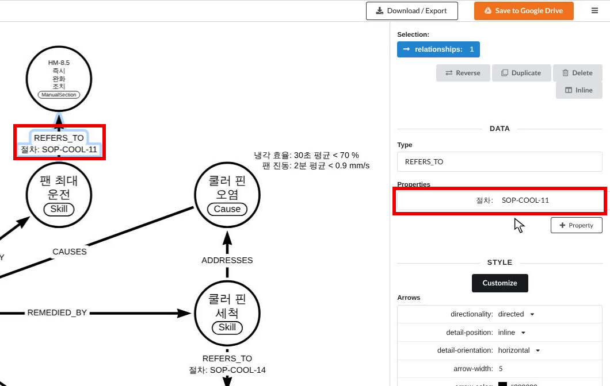
이번에 추가 팬 베어링 열화 · 진동 증가 · 절차 번호 넷
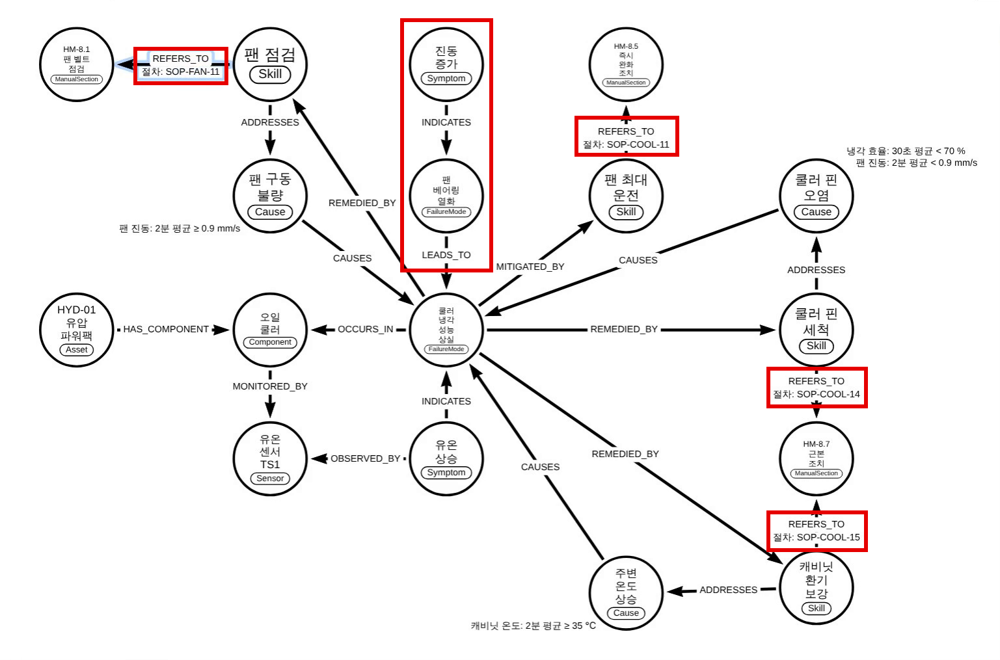
확인 원 17개 · 화살표 21개. 8.7절로 들어가는 화살표 둘의 번호가 SOP-COOL-14와 SOP-COOL-15로 다릅니다.
원인과 조치 색칠하기
그림은 다 그렸습니다. 이 그림으로 판단하기 전에, 원인과 조치가 한눈에 띄게 색을 넣습니다.
쿨러 핀 오염을 누르고 Ctrl을 누른 채 팬 구동 불량, 주변 온도 상승을 누르세요. 오른쪽 칸 위에 nodes: 3이 나오면 셋이 같이 골라진 것입니다. node-color(원 색깔) 칸에 연한 빨강 값을 넣고 Tab을 누르면 셋이 한꺼번에 칠해집니다. 조치 넷도 같은 식으로 골라 연한 초록 값을 넣으세요.
| 함께 고를 원 | node-color 값 |
|---|---|
| 원인 셋: 쿨러 핀 오염 · 팬 구동 불량 · 주변 온도 상승 | #fca5a5 |
| 조치 넷: 팬 최대 운전 · 쿨러 핀 세척 · 캐비닛 환기 보강 · 팬 점검 | #86efac |
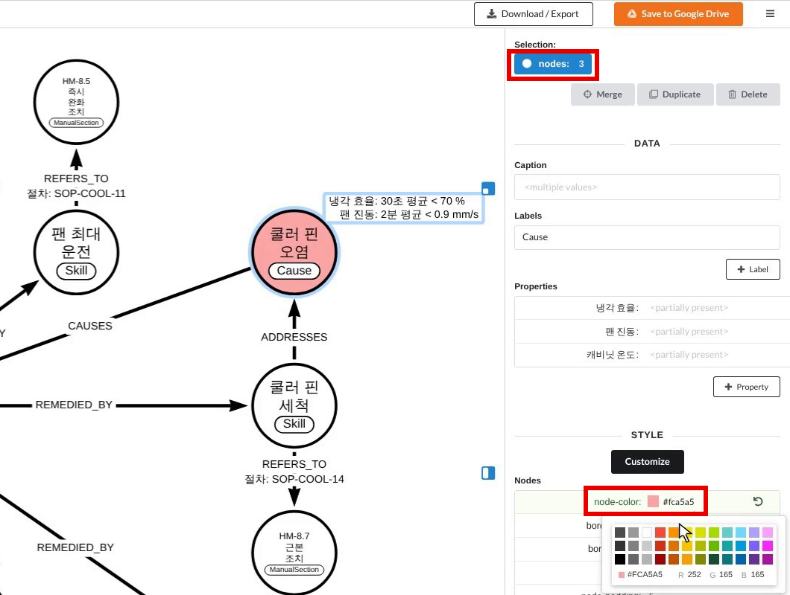
확인 원인 셋이 연한 빨강, 조치 넷이 연한 초록입니다(다음 단계 사진).
그림으로 판단하기
빈 곳을 한 번 눌러 고른 것을 푸세요.
유온이 올라서 경보가 왔다고 해 봅니다. 유온 상승이 가리키는 고장은 쿨러 냉각 성능 상실이고, 여기로 들어오는 CAUSES를 거꾸로 따라가면 원인 셋이 나옵니다. 셋 가운데 어느 것인지는 증거로 가립니다.
경보가 왔을 때 잰 값이 냉각 효율 30초 평균 46.2 %, 팬 진동 2분 평균 0.575 mm/s, 캐비닛 온도 2분 평균 28 ℃였다고 해 봅니다. 이 값은 그림에 적지 않고, 원인마다 붙은 증거와 견줍니다.
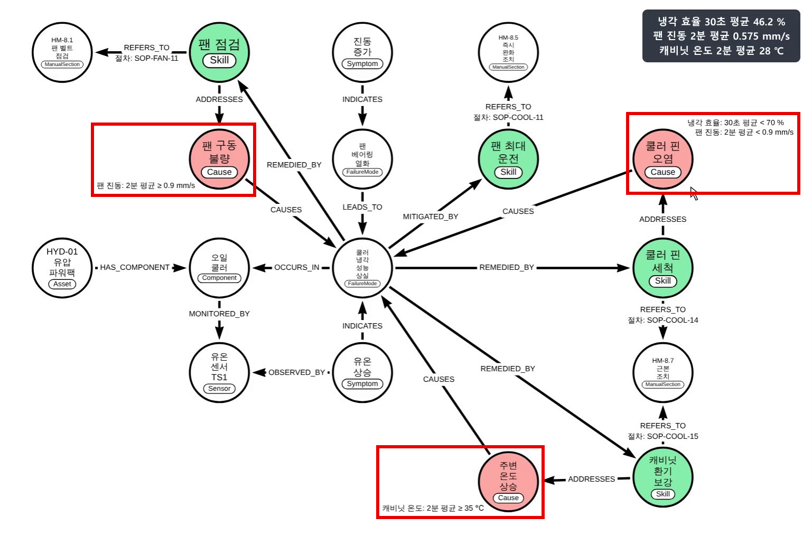
확인 핀 오염의 증거 두 줄만 맞습니다(46.2는 70 미만, 0.575는 0.9 미만). 팬 구동 불량은 0.9 이상, 주변 온도 상승은 35 ℃ 이상이어야 해서 빠집니다. 화살표를 따라가면 조치는 쿨러 핀 세척, 절차는 SOP-COOL-14, 근거는 8.7절입니다. 세척은 설비를 세워야 하니, 그 전에 팬 최대 운전으로 온도부터 낮춰 둡니다.
값이 다르면 가는 길도 달라집니다.
- 팬 진동이 1.4 mm/s였다면 핀 오염의 0.9 미만에는 안 맞아 빠지고 팬 구동 불량의 0.9 이상에 맞습니다. 길은 팬 점검, SOP-FAN-11, 8.1절로 달라지고, 진동 증가가 가리키는 팬 베어링 열화도 함께 의심합니다.
- 처음 값에서 캐비닛 온도만 38 ℃였다면 핀 오염의 두 줄은 그대로 맞고 주변 온도 상승에도 맞아 원인이 둘 남습니다. 하나 맞았다고 멈추지 말고 환기 보강과 핀 세척을 둘 다 봅니다.
- 팬 진동 값을 아직 못 받았다면 두 줄이 다 맞는지 알 수 없으니 핀 오염이라고 정하지 않고, 진동 값부터 받습니다.
처음의 정비 메모 한 줄(유온이 올라 살펴보니 쿨러 핀이 더러워서 닦았다)만으로는 진동이 1.4일 때 어디를 봐야 할지 알 수 없습니다. 원인 · 증거 · 조치를 관계로 이어 둔 그림은 잰 값에 따라 다른 원인과 조치, 근거로 가는 길을 찾아 줍니다.
파일로 남기고 다시 열기
그린 그림은 지금 이 브라우저에만 저장돼 있습니다. 다른 컴퓨터에서 열거나 다른 사람에게 주려면 파일로 받아 둡니다.
위쪽 Download / Export(내려받기)를 누르세요.
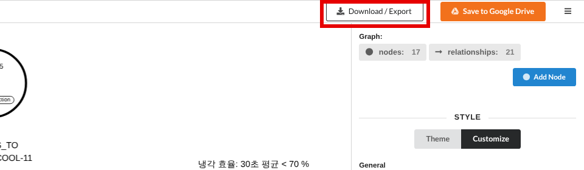
처음 열리는 PNG는 보고서 같은 데 붙이는 그림 파일입니다. 맨 위 줄의 Download를 누르세요.
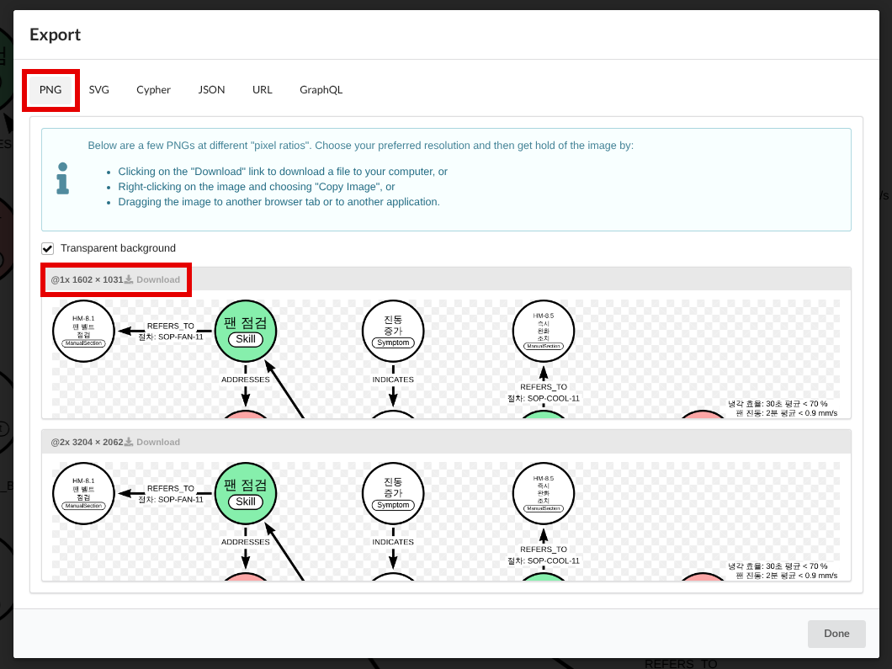
JSON은 원과 화살표를 글자로 적어 둔 파일이라, 나중에 다시 열어 이어 고칠 수 있습니다. JSON 탭에서도 Download를 누르세요.
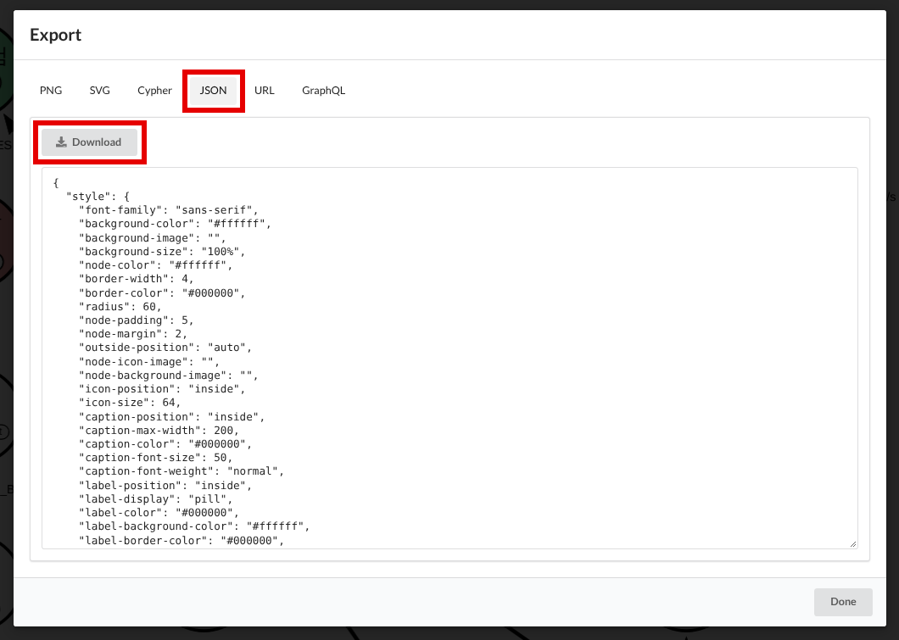
같은 창의 Cypher 탭에는 이 그림의 종류 · 화살표 · 꼬리표를 그래프 데이터베이스 Neo4j에 넣는 명령이 나옵니다. 보기만 하고 아래 Done으로 창을 닫으세요.
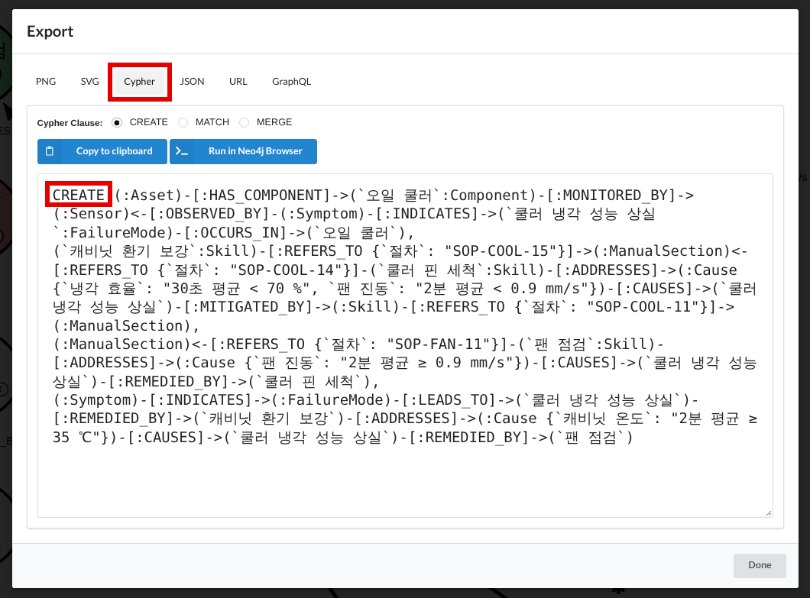
받은 JSON이 잘 열리는지 새 그림에서 봅니다. 빈 곳을 눌러 고른 것을 풀고(골라 둔 채 New를 누르면 그림판이 옛 그림에 멈춥니다), 왼쪽 위 로고를 눌러 New(새 그림)에 커서를 올린 뒤 오른쪽으로 곧장 옮겨 Web Browser storage를 누르세요. 새 그림이 열려도 메뉴는 떠 있으니 그림 쪽을 한 번 눌러 닫습니다.
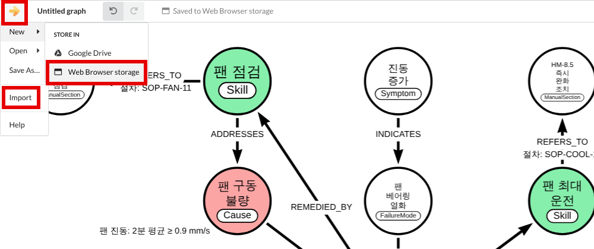
다시 로고에서 Import(가져오기)를 누르고, Choose File(파일 고르기)로 받은 Untitled graph.json을 고른 뒤 아래 Import를 누르세요.
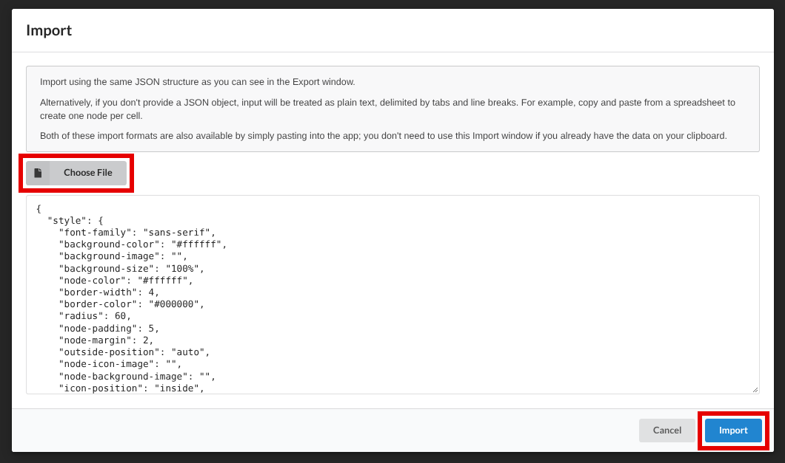
들어온 것이 모두 골라져 오른쪽 위에 개수가 나옵니다. 원 크기와 화살표 이름의 방향은 처음 값으로 돌아와 있습니다. 1단계에서 Customize로 바꾼 두 값은 파일을 열 때 따라오지 않기 때문입니다. 새 그림에 처음부터 있던 빈 원은, 빈 곳을 눌러 고른 것을 푼 뒤 그 원만 누르고 오른쪽 Delete(지우기)로 지우세요.
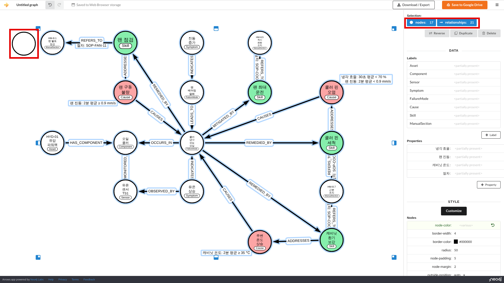
확인 nodes: 17 · relationships: 21로 그린 것과 같고, 원인의 증거 줄과 화살표의 절차 번호, 색이 함께 들어와 있습니다.
학교 PC는 껐다 켜면 받은 파일이 지워지니, 두 파일을 USB나 본인 클라우드에 옮겨 두세요.